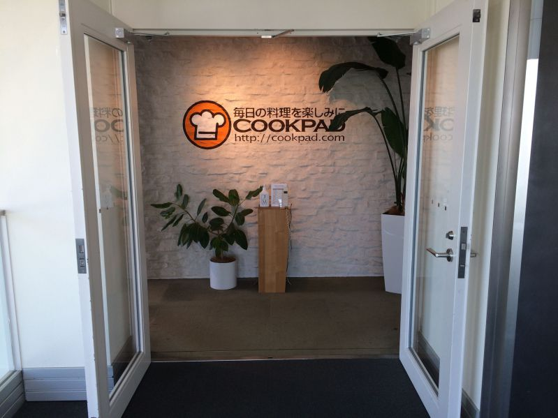
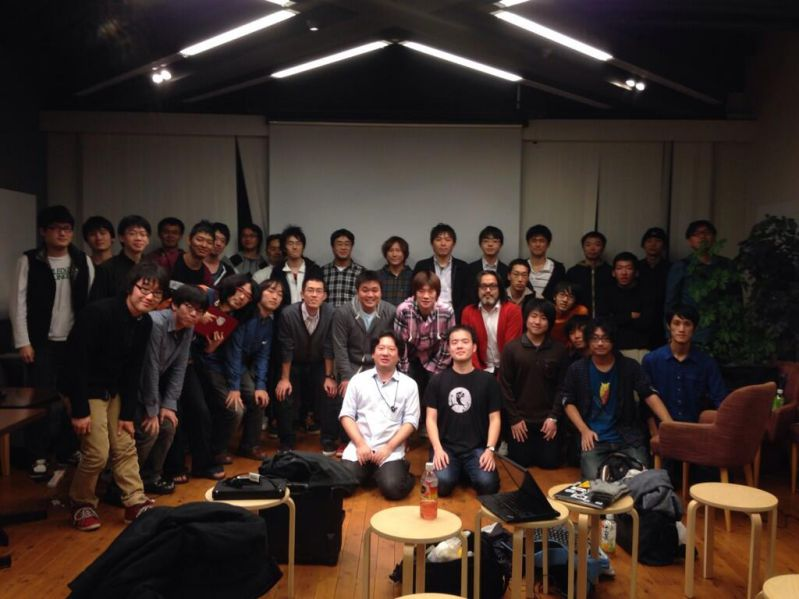

#VimConf2013 に参加しました¶
会場はCookpad株式会社さんの提供でした。ありがとうございます。
当日のイベントページ¶
当日の感想・まとめなど¶
#VimConf2013 がTwitterでトレンド入りすごい。
{kind=link}
マクロ漁船の人がEvil modeで実際にBrainf*ck試して「動かないんだけど。」っていったのがおもしろかった。
参加費等でお金が貯まったらVimの作者であるBramさんを呼ぼうと考えているそう。楽しみ。
会場のWindowsPCとMacが半々くらいだった。→と思ったけどGentooとかのLinuxの人も多そう。
Vaioのハードが変○すぎてGentoo入らない(@thinca) 先駆者求む。
発表まとめ¶
発表を聞いててメモしたことや思ったこと。
How to suggest new features for Vim @kaoriya¶
実際にVimどうやって機能を取りこんでもらうかについて。
Vim is the TEXT EDITOR. not an IDE, not an Programming Language, not an Runtime
VisualStudio に嫉妬→嫉妬しているのは補完なんだ→そのパッチをなるべくシンプルに構築
vim-devに送ってないPatchが20くらいはある。
大晦日にまたコミケに出店します。Spartan Vim 3rd出ます。Vimタオル作ります。多分100枚くらいしかつくりません。
Evil is justice. @esehara¶
Emacsの重大な脆弱性→小指です。
geditやIntelliJを使うのにVimのキーバインドが使えるPlugin探しますよね。そこでEvil。
EmacsでEvil Modeを使う。そう。あなたのEmacsはVimなのかもしれません。
Emacs から Vim へ移ってきた人→結構いる。以下その理由。
WindowsでEmacs使おうとしたときにあれだった。
Emacs のバイナリエディタがあれ。
Macへ移った時にEmacのビルドができなくて一時的にVim使ったらそのまま。
EmacsのEdit機能が貧弱。
How to use git from vim @c0hama¶
VimからGitを使う。まず素のVimから。githubに繋げない人もいるので、僕ですね。
基本編: コマンドラインモードから”:!git ～” とやればVimからGit使えます。
Plugin導入編: vim-fugitive と gitv について。
gitvとは→gitkのVimクローン。vim-fugitiveに依存している。
ハッシュを使って操作することができるとgitvがすごく便利。
vital.ProcessManager @ujm¶
Gentooのせいなのか、microHDMIのせいなのか、このASUSのZenbookでは3回ともプロジェクタとの接続に失敗。そのかわりにこの素晴らしいMBAで発表します。
ProcessManagerとは何か。使っているのは10人くらいだと思います。→(1, 2人が手を挙げる)→10人どころではなかったorz
vimproc = vimプロシー
スタンディングデスクは本来すべきことには集中でき、Webブラウジングなど本来すべきでないことについてはやらなくなる。
Do You Know about Vim Runtime Files? @Linda_pp¶
社会人1年目。Vim歴2年目。clever-f.vim や vim-operator-surround 作ってます。
ftplugin/gitrebase.vim 便利。 $git rebase 時のファイル編集用設定。
ftplugin/ruby.vim は gf や <C-w>fで require 先を開くことができる。
「それVimで出来るよ!」が「それ標準のVimでできるよ!」と言えるといいですね。
How to write patches for Vim @k_takata¶
ついカーソルキーを使ってしまう初心者です。(1年間にVimに送ったPatch約70個)
Vimのソースコードを読む時はctagsを使いましょう。
「私が送ったお気に入りのPatch」←いってみたい。
自分のオリジナルのVimをビルドしてみましょう。どんなPatchでもOKです。Vimこわくないよ。
An introduction to neocomplete @ShougoMatsu¶
暗黒美夢王(ダークビムマスター)
neo-complete と neocomplete は別物である。 (バトルエディターズ参照)
YouCompleteMeはif_pythonに依存。圧倒的速度。しかしC++モジュールがあるので、拡張が難しい。更にビルド必須なのでインストールが難しい(特にWindow環境)
neocompleteはif_lua依存。neocomplecacheより速く、neocomplecacheの機能をほぼ取り込んでいる。
neocompleteの機能の実装はほぼ終わり。現在はたまにでてくる問題の解決がメイン。良いアイディアがあれば採用されるかもしれない。
neocompleteとjediの連携等はFAQに乗っているのでそちらを参考にしてください。
最後に¶
会場を提供してくださったCookpadさん、スタッフや発表者のみなさん、そして参加者のみなさんお疲れ様でした＆とても楽しい時間をありがとうございました。
